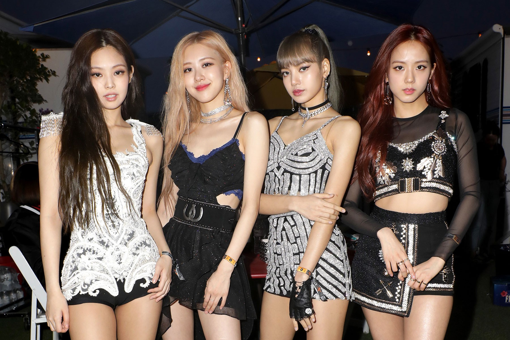

MusicSpace
Recent News in the Music Industry
This Week Hot News
BlackPink Talks About Climate Change
BlackPink brought their ballad "Stay" to the YouTube Originals special Dear Earth on Saturday (Oct. 23).
Sebastian Yatra, who’s touring with Ricky and Enrique in select cities, kicked off the night with an energetic set.
T-PAIN JOINS ADVISORY BOARD AT MUSIC LICENSING STARTUP SLIP.STREAM
Music licensing startup Slip.stream, which runs a royalty-free library of over 50,000 tracks and 40,000 sound effects, has added 6x Grammy-winning artist and producer T-Pain to its advisory board.
K-Pop stars BTS dump Sony for Universal Music
K-Pop superstars BTS have ditched Sony Music's Columbia Records as their distributor and marketing partner in favour of Universal Music. The move was confirmed by BTS's management company Hybe after initial reports by Billboard and Bloomberg
WARNER MUSIC LAUNCHES NEW HIP-HOP LABEL ASIATIC RECORDS TO CREATE ‘SUPERSTARS IN THE GENRE’
While Warner Music has launched country-specific hip-hop labels in the past, the company says that this new label is the first Warner Music imprint with “the explicit mission of creating truly cross-Asian – and worldwide – superstars in the genre.” Asiatic will draw on the combined resources and experiences of the company’s multiple affiliates across the region, offering its roster what it calls “an integrated array of marketing and promotional services”. While the label seeks to support all the most promising emerging talent across the continent regardless of gender, Asiatic says that it will lean heavily into supporting female artists in the region